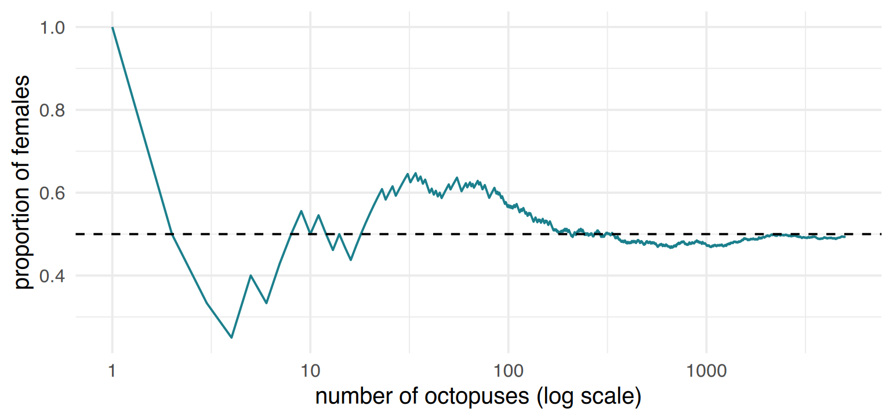

d…()
(probability or density), p…() (cumulative probability),
q…() (quantile), r…() (random values);d…() (probabilité ou densité), p…()
(probabilité cumulée), q…() (quantile), r…()
(valeurs aléatoires) ;Why probability in a statistics course? Because a p-value (Session 6) and a confidence interval (Session 5) are probability statements: “if chance alone were at work, how often would we see this?”. Distributions are the models of “chance alone”.
Pourquoi des probabilités dans un cours de statistiques ? Parce qu’une p-value (séance 6) et un intervalle de confiance (séance 5) sont des énoncés de probabilité : « si seul le hasard agissait, à quelle fréquence verrions-nous ceci ? ». Les lois de distribution sont les modèles du « hasard seul ».
The probability of an event is the proportion of times it happens if the random process is repeated many times. In the octopus data, the proportion of females is close to 0.5. We can simulate thousands of octopuses with a 0.5 chance of being female and watch the proportion settle (the law of large numbers):
La probabilité d’un événement est la proportion de fois où il se produit si le processus aléatoire est répété un grand nombre de fois. Dans les données de pieuvres, la proportion de femelles est proche de 0,5. On peut simuler des milliers de pieuvres avec une chance de 0,5 d’être femelle et regarder la proportion se stabiliser (la loi des grands nombres) :
set.seed(4)
female <- rbinom(5000, size = 1, prob = 0.5) # 1 = female, 0 = male
running <- cumsum(female) / seq_along(female) # proportion after 1, 2, 3 ... octopuses
running[c(10, 100, 1000, 5000)]#> [1] 0.5000 0.5700 0.4730 0.4932ggplot(data.frame(n = 1:5000, p = running), aes(n, p)) +
geom_line(colour = "#1b7f8c") + geom_hline(yintercept = 0.5, linetype = 2) +
scale_x_log10() + labs(x = "number of octopuses (log scale)", y = "proportion of females") + theme_c()
Functions and arguments used here
| Function / argument | What it does | Value it expects |
|---|---|---|
rbinom(n, size, prob) |
n random values from a binomial distribution; with
size = 1, each value is 0 or 1 (one trial) |
|
cumsum(x) |
cumulative sum: 1st value, 1st + 2nd, 1st + 2nd + 3rd… | a numeric vector |
seq_along(x) |
1, 2, 3 … up to the length of x |
a vector |
Fonctions et arguments utilisés ici
| Fonction / argument | Ce qu’il fait | Valeur attendue |
|---|---|---|
rbinom(n, size, prob) |
n valeurs aléatoires d’une loi binomiale ; avec
size = 1, chaque valeur vaut 0 ou 1 (un essai) |
|
cumsum(x) |
somme cumulée : 1re valeur, 1re + 2e, 1re + 2e + 3e… | un vecteur numérique |
seq_along(x) |
1, 2, 3 … jusqu’à la longueur de x |
un vecteur |
Three rules you will use:
Trois règles que vous utiliserez :
A distribution says which values a random variable can take and how probable each is. Discrete distributions (counts: 0, 1, 2…) give a probability to each value; continuous distributions (measurements) give a density: probabilities are areas under the curve.
R has the same four functions for every distribution; only the suffix
changes (binom, pois, norm,
lnorm, t, chisq…):
| Prefix | Gives | Example | Question it answers |
|---|---|---|---|
d |
probability (discrete) / height of the curve (continuous) | dbinom(2, 10, 0.06) |
P(X = 2)? |
p |
cumulative probability P(X ≤ x) | pbinom(2, 10, 0.06) |
P(X ≤ 2)? |
q |
quantile: the value x such that P(X ≤ x) = p | qnorm(0.975) |
below which value are 97.5 %? |
r |
random values | rnorm(5, 30, 2) |
simulate data |
Une loi de distribution dit quelles valeurs une variable aléatoire peut prendre et avec quelle probabilité. Les lois discrètes (comptages : 0, 1, 2…) donnent une probabilité à chaque valeur ; les lois continues (mesures) donnent une densité : les probabilités sont des aires sous la courbe.
R a les mêmes quatre fonctions pour chaque loi ; seul le suffixe
change (binom, pois, norm,
lnorm, t, chisq…) :
| Préfixe | Donne | Exemple | Question à laquelle il répond |
|---|---|---|---|
d |
probabilité (discrète) / hauteur de la courbe (continue) | dbinom(2, 10, 0.06) |
P(X = 2) ? |
p |
probabilité cumulée P(X ≤ x) | pbinom(2, 10, 0.06) |
P(X ≤ 2) ? |
q |
quantile : la valeur x telle que P(X ≤ x) = p | qnorm(0.975) |
sous quelle valeur sont 97,5 % ? |
r |
valeurs aléatoires | rnorm(5, 30, 2) |
simuler des données |
When: n independent trials, each a “success” with the same probability p; X = number of successes. Examples: number of undersized octopuses in a catch of n; number of fishers out of 20 who support a closure; number of tagged turtles re-sighted. Mean = n·p, variance = n·p·(1 − p).
On reopening day, about 5 % of the octopuses of Tsifota were under 350 g (a common minimum weight). Take p = 0.06 for an ordinary fishing day. A fisher lands 10 octopuses:
Quand : n essais indépendants, chacun un « succès » avec la même probabilité p ; X = nombre de succès. Exemples : nombre de pieuvres trop petites dans une capture de n ; nombre de pêcheurs sur 20 qui soutiennent une fermeture ; nombre de tortues marquées revues. Moyenne = n·p, variance = n·p·(1 − p).
Le jour de la réouverture, environ 5 % des pieuvres de Tsifota pesaient moins de 350 g (un poids minimum courant). Prenons p = 0,06 pour un jour de pêche ordinaire. Un pêcheur débarque 10 pieuvres :
#> [1] 0.53861511 0.34379688 0.09875017 0.01680854 0.00187755#> [1] 0.5386151#> [1] 0.4613849#> [1] 0.882412#> [1] 0.117588#> [1] 0.6Functions and arguments used here
| Function / argument | What it does | Value it expects |
|---|---|---|
dbinom(x, size, prob) |
probability of exactly x successes |
|
size |
number of trials n | a whole number |
prob |
probability of success at each trial | between 0 and 1 |
pbinom(q, size, prob, lower.tail) |
P(X ≤ q); with lower.tail = FALSE: P(X > q) |
Fonctions et arguments utilisés ici
| Fonction / argument | Ce qu’il fait | Valeur attendue |
|---|---|---|
dbinom(x, size, prob) |
probabilité d’exactement x succès |
|
size |
nombre d’essais n | un entier |
prob |
probabilité de succès à chaque essai | entre 0 et 1 |
pbinom(q, size, prob, lower.tail) |
P(X ≤ q) ; avec lower.tail = FALSE : P(X > q) |
“Or more” with discrete distributions. P(X ≥ 2) = 1 − P(X ≤ 1), not 1 − P(X ≤ 2). For counts, ≥ 2 and > 1 are the same thing; ≥ 2 and > 2 are not.
« Ou plus » avec les lois discrètes. P(X ≥ 2) = 1 − P(X ≤ 1), pas 1 − P(X ≤ 2). Pour des comptages, ≥ 2 et > 1 sont la même chose ; ≥ 2 et > 2 ne le sont pas.
When: counts of independent events in a fixed unit (urchins per m², turtles per hour of survey, larvae per litre), with a mean λ (“lambda”). Its variance equals its mean. If the variance of real counts is much larger than the mean, individuals are clumped (overdispersion), which is very common in ecology — the negative binomial distribution then fits better (Statistical modelling course).
Quand : comptages d’événements indépendants dans une unité fixe (oursins par m², tortues par heure d’observation, larves par litre), de moyenne λ (« lambda »). Sa variance est égale à sa moyenne. Si la variance de vrais comptages est bien plus grande que la moyenne, les individus sont agrégés (surdispersion), ce qui est très fréquent en écologie — la loi binomiale négative convient alors mieux (cours Modélisation statistique).
#> [1] 0.08208500 0.20521250 0.25651562 0.21376302 0.13360189 0.06680094 0.02783373#> [1] 0.082085#> [1] 0.108822# real counts of the lagoon: compare mean and variance
inshore <- lag$urchins[lag$zone == "inshore"]
c(mean = mean(inshore), variance = var(inshore))#> mean variance
#> 3.907692 4.875776Functions and arguments used here
| Function / argument | What it does | Value it expects |
|---|---|---|
dpois(x, lambda), ppois(q, lambda) |
Poisson probability of exactly x; cumulative P(X ≤
q) |
|
lambda |
the mean count (also the variance) | a positive number |
Fonctions et arguments utilisés ici
| Fonction / argument | Ce qu’il fait | Valeur attendue |
|---|---|---|
dpois(x, lambda), ppois(q, lambda) |
probabilité de Poisson d’exactement x ; cumulée P(X ≤
q) |
|
lambda |
le comptage moyen (aussi la variance) | un nombre positif |
The normal (Gaussian) distribution is the symmetric bell curve, fully defined by its mean μ and standard deviation σ. Many measurements are close to normal (lengths of animals of the same age, water temperature on a given day), and — much more important — means of samples are close to normal even when the data are not (Session 5). That is why it is everywhere in statistics.
The 68–95–99.7 rule: about 68 % of values lie within 1 σ of the mean, 95 % within 2 σ (exactly 1.96), 99.7 % within 3 σ.
La loi normale (gaussienne) est la courbe en cloche symétrique, entièrement définie par sa moyenne μ et son écart-type σ. Beaucoup de mesures sont proches de la normale (tailles d’animaux du même âge, température de l’eau un jour donné), et — bien plus important — les moyennes d’échantillons sont proches de la normale même quand les données ne le sont pas (séance 5). C’est pourquoi elle est partout en statistiques.
La règle 68–95–99,7 : environ 68 % des valeurs sont à moins de 1 σ de la moyenne, 95 % à moins de 2 σ (exactement 1,96), 99,7 % à moins de 3 σ.
Example: the shell length of adult sea urchins on a reef is normal with mean 72 mm and SD 8 mm.
Exemple : le diamètre du test des oursins adultes d’un récif suit une loi normale de moyenne 72 mm et d’écart-type 8 mm.
#> [1] 0.0668072#> [1] 0.05208128#> [1] 0.6826895#> [1] 82.25241#> [1] -1.959964 1.959964Functions and arguments used here
| Function / argument | What it does | Value it expects |
|---|---|---|
pnorm(q, mean, sd, lower.tail) |
P(X ≤ q) = area under the curve to the left of q |
|
qnorm(p, mean, sd) |
the value below which a share p of the distribution
lies (inverse of pnorm()) |
p between 0 and 1 |
mean, sd |
parameters μ and σ; defaults 0 and 1 = the standard normal distribution | numbers (sd > 0) |
rnorm(n, mean, sd) |
n random values from a normal distribution |
Fonctions et arguments utilisés ici
| Fonction / argument | Ce qu’il fait | Valeur attendue |
|---|---|---|
pnorm(q, mean, sd, lower.tail) |
P(X ≤ q) = aire sous la courbe à gauche de q |
|
qnorm(p, mean, sd) |
la valeur sous laquelle se trouve une part p de la loi
(inverse de pnorm()) |
p entre 0 et 1 |
mean, sd |
paramètres μ et σ ; défauts 0 et 1 = la loi normale centrée réduite | nombres (sd > 0) |
rnorm(n, mean, sd) |
n valeurs aléatoires d’une loi normale |
A z-score tells how many standard deviations a value
is from the mean: z = (x − μ) / σ. It puts variables
with different units on the same scale. An urchin of 90 mm has z = (90 −
72) / 8 = 2.25: it is unusually large (|z| > 2 happens for about 5 %
of values). scale(x) converts a whole vector into z-scores
using its own mean and SD.
Un score z indique à combien d’écarts-types une
valeur est de la moyenne : z = (x − μ) / σ. Il met des
variables d’unités différentes sur la même échelle. Un oursin de 90 mm a
z = (90 − 72) / 8 = 2,25 : il est inhabituellement grand (|z| > 2
arrive pour environ 5 % des valeurs). scale(x) convertit
tout un vecteur en scores z avec sa propre moyenne et son propre ET.
#> [1] 2.25z <- as.vector(scale(lag$seagrass_cover))
round(c(mean = mean(z), sd = sd(z)), 3) # z-scores always have mean 0 and SD 1#> mean sd
#> 0 1Functions and arguments used here
| Function / argument | What it does | Value it expects |
|---|---|---|
scale(x) |
z-scores: (x − mean) / SD, as a 1-column matrix;
as.vector() makes it a plain vector |
a numeric vector |
Fonctions et arguments utilisés ici
| Fonction / argument | Ce qu’il fait | Valeur attendue |
|---|---|---|
scale(x) |
scores z : (x − moyenne) / ET, sous forme de matrice à 1 colonne ;
as.vector() en fait un simple vecteur |
un vecteur numérique |
A variable is log-normal when its
log is normal. It is always positive and right-skewed —
octopus weights, fish biomass, incomes. This is why the log
transformation of Session 3 worked: on the log scale, the normal tools
apply. The parameters meanlog and sdlog of
dlnorm()/plnorm() are the mean and SD
of the log.
Une variable est log-normale quand son
log est normal. Elle est toujours positive et
asymétrique à droite — poids de pieuvres, biomasse de poissons, revenus.
C’est pourquoi la transformation log de la séance 3 a fonctionné : sur
l’échelle log, les outils de la loi normale s’appliquent. Les paramètres
meanlog et sdlog de
dlnorm()/plnorm() sont la moyenne et l’ET
du log.
#> meanlog sdlog
#> 6.3271205 0.4992081#> [1] 0.1736438#> [1] 0.15625The log-normal model predicts 17.4 % of octopuses under 350 g in the open area, close to the observed 15.6 %: the model describes the data well.
Le modèle log-normal prédit 17.4 % de pieuvres sous 350 g dans la zone ouverte, proche des 15.6 % observés : le modèle décrit bien les données.
Give probabilities with 4 decimals.
log(weight_g)). Probability of a
weight under 350 g according to this model?Donnez les probabilités avec 4 décimales.
log(weight_g)). Probabilité d’un poids sous 350 g selon ce
modèle ?Q2: “5 or more” = 1 − P(X ≤ 4). Q4: 1 − P(X ≤ 3). Q6:
qnorm(). Q8: as in the last section, with the reopened
area.
Q2 : « 5 ou plus » = 1 − P(X ≤ 4). Q4 : 1 − P(X ≤ 3). Q6 :
qnorm(). Q8 : comme dans la dernière section, avec la zone
rouverte.
dbinom(3, size = 20, prob = 0.15) # 1
1 - pbinom(4, 20, 0.15) # 2 (or pbinom(4, 20, 0.15, lower.tail = FALSE))
dpois(0, 1.8) # 3
1 - ppois(3, 1.8) # 4
pnorm(26, mean = 28.5, sd = 1.2) # 5
qnorm(0.95, 28.5, 1.2) # 6
(31.2 - 28.5) / 1.2 # 7
oc <- read.csv("data/octopus_catch.csv")
lr <- log(oc$weight_g[oc$area == "reopened"])
plnorm(350, meanlog = mean(lr), sdlog = sd(lr)) # 8
# 9: Poisson (counts in a fixed area) 10: overdispersion (clumping)